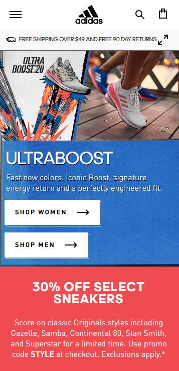
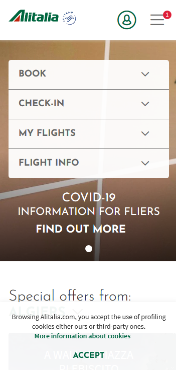
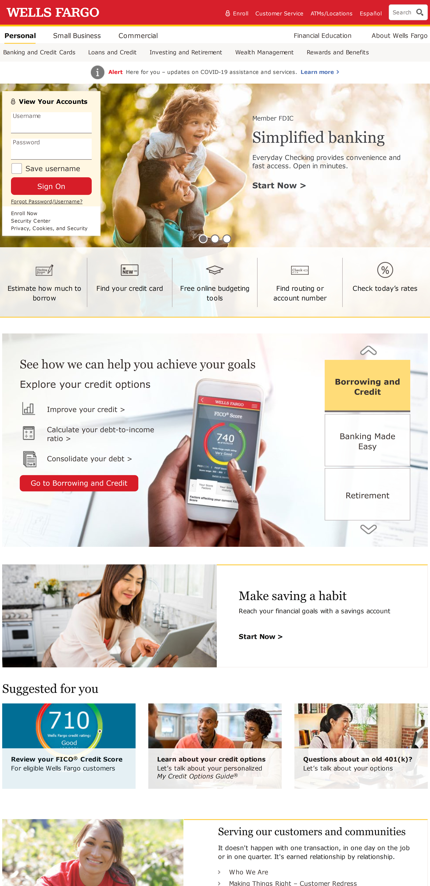

Contrast
Adidas
In this website we can see how beautiful the colors are mixed. The contrast ratio is very good and does not create problems for the end users, the consumers.
White Space
Alitalia
The website has a clean design. The white space is used to create a path for users to follow enhancing the important things. The website is user friendly, organized and has a hierarchy.
Rule of Thirds
Wells Fargo
Wells Fargo’s website use the rule of thirds. Different images are modified and optimized.The website looks well balanced, and friendly.